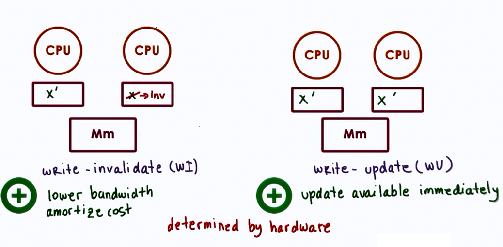

Synchronization
Waiting for other processes, so that they can continue working together
- may repeatedly check to continue
- sync using spinlocks
- may wait for a signal to continue
- sync using mutexes and condition vatiables
- waiting hurts performance
- CPUs wste cycles for checking; cache effects
Limitation of mutextes and condition variables
- Error prone/correctness/ease of use
- unlock wrong mutex, signal wrong condition variable
- Lack of expressive power
- helper variables for access or priority control
Low-level support: hardware atmoic instructions
Synchronization constructs
- Spinlocks (basic sync construct)
- Spinlock is like a mutex
- mutual exclusion
- lock and unlock(free)
- but, lock == busy => spinning
- Spinlock is like a mutex
- Semaphores
- common sync construct in OS kernels
- like a traffic light: Stop and Go
- like mutex, but more general
Semaphore == integer value
- on init
- assigned a max value (positive int) => max count
- on try(wait)
- if non-zero, decrement and proceed => counting semaphore
- if initialized with 1
- semaphore == mutex(binary semaphore)
- on exit(post)
- increment
Syncing different types of accesses
Reader/Writer locks
| read (don't modify) | write (always modify) |
| shared access | exclusive access |
- RW locks
- specify type of access, then lock behaves accordingly
Monitors (highlevel construct)
- shared resource
- entry resource
- possible condition variables
- On entry:
- lock, check
- On exit:
- unlock, check, signal
More synchroniaztion constructs
- serializers
- path expressions
- barriers
- rendezvous points
- optimistic wait-free sync (RCU) [Read Copy Update]
All need hardware support.
Need for hardware support
- Problem
- concurrent check/update on different CPUs can overlap
Atomic instructions
Critical section with hardware supported synchronization
Hardware specific
-
test-and-set
- returns(tests) original values and sets new-value!= 1 (busy) automatically
- first thread: test-and-set(lock) => 0 : free
- next ones: test-and-set(lock) => 1 busy
- reset lock to 1, but that's okay
- + : Latency
- + : minimal (Atomic)
- + : Delay potentially min
- - : Contention processors go to memory on each spin - To reduce contention, introduce delay - Static(based on a fixed value) or Dynamic(backoff based, random delay)
-
read-and-increment
- compare-and-swap
Guarantees
- atomicity
- mutual exclusion
- queue all concurrent instructions but one
Shared Memory Multiprocessors
Also called symmetric multiprocessors (SMP)

- Caches
- hide memory latency, "memory" further away due to contention
- no-write, write-through, write-back
Cache Coherence

